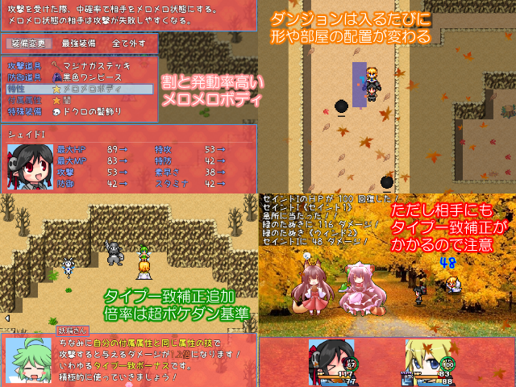

保存資料：2019-03-30の公開ページを再生しています。原HTMLと画像の載荷は保存済みです。
| No.01 もしもン不思議のダンジョン ちびっ子探検隊！ | |
|---|---|
 |
|
| 作者：すいかびぃ | |
| ジャンル：不思議のダンジョンの皮を被ったデフォ戦ゲー | |
| ツール：VXAce | |
| 配信/投稿：可・可 | |
| 作者コメント： GWに出し損ねたセイントⅠとシェイドⅠが主役のランダムダンジョンゲーです。 本当は夏にちなんだ短編見るゲ集を出すつもりでしたが予想以上に時間が無かったorz いつもよりポケダン要素増し増しでお送り致します。 | |
| 管理人コメント： Because it's there.(そこにダンジョンがあるから) | |
| ダウンロード(52.2MB)｜感想掲示板 | |
| 前の作品｜次の作品｜TOPへ戻る | |